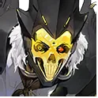
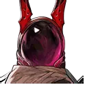
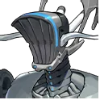

Story, SS Nightmare & 8 Factions
Explore the cosmic horror world of Chaos Zero Nightmare, the amnesiac Captain aboard the SS Nightmare, and the sociopolitical factions warring against existential collapse.
The SS Nightmare & The Amnesiac Captain
Eons ago, an incomprehensible extraterrestrial phenomenon known as Chaos engulfed Earth, inflicting catastrophic ecological devastation and driving humanity into an interstellar space-faring empire to survive.
You awaken as an elite Imperial Officer holding the rank of Captain aboard the flagship SS Nightmare. During a routine Chaos eradication sortie, an unprecedented spatial convergence wiped your memory clean—a biological impossibility given imperial genetic engineering.
Alongside Vice Captain Renoa and key operatives, you must unravel the conspiracy inside the Imperial Admiralty, navigate ideological warfare between the corporate syndicate Peltion and the religious Holy Crusaders, and discover the true purpose of the Chaos infection.
The Sanity Loop & Deep Trauma
Unlike conventional battlefields, warfare within Chaos Zones degrades the human psyche. Combatants exposed to mental horror accumulate Deep Trauma, requiring psychiatric restoration at the Epione Center in Ark City.
The 8 Major Galactic Factions
Terrascion
HQ: SS Nightmare & SS EdenityThe frontline military and administrative body responsible for deep space expeditionary fleets and tactical academy studies.
Ironrain
HQ: Frontier Outposts & Wolf Platoon Deployment SectorA battle-hardened faction primarily composed of elite Rangers and Hunters. Home of the famous Wolf Platoon vanguard team.
Stella Familia
HQ: Altair SectorA distinctive faction characterized by acute primal instincts, beast-kin traits, and extraordinary resilience in corrupted Chaos Zones.
Peltion
HQ: Company 110 HeadquartersA corporate-military syndicate specializing in tactical technology, mercenary contracts, and deck modulation algorithms.

Cassius
Zeta Scarlet Marianne Tina
Akad RitochkaThe Holy Crusaders
HQ: The Grand Cathedral & Epione SanctuariesA devout religious order dedicated to preaching the divine word and shielding souls from psychological corruption.
Sileyma
HQ: Outer Celestial SpheresAncient and enigmatic horned beings wielding immense cosmic energy, acting as formidable auxiliary partners.
Wanderers (Independents)
HQ: None (Drifting Stars)Elite independent combatants and master swordsmen operating without imperial or corporate allegiance.
Imperial High Command & Allies
HQ: Imperial Capital & Dimensional NexusesDirect imperial officers, enigmatic entities, and interdimensional collaborators.